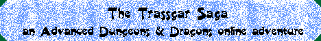

This TimesSquare Awards Team Webring site is
owned by This TimesSquare Awards Team Webring site is
owned by Bernard Assaf. Want to try for a TS Award? Apply today! |
|---|
| [ Previous 5 Sites | Skip Previous | Previous | Next | Skip Next | Next 5 Sites | Random Site | List Sites ] |

Copyright © 1996-2001 by Bernard Assaf. All Rights Reserved.
Announcements:
[March 21, 2001] Uploaded the
three parchment
layers of the maps found by the 'Staff Quest' players.
[February 9, 2001] Started a new page for the relatively new side-adventure: Ghoul Quest, starring Amber, Tilder, Xanter, and some NPCs. I archived moves from the FEF for Vortex Quest and Ghoul Quest (Amber, Tilder, Xanter's adventures) through September 29, 2000. Should we call them the ER adventures (all 3 PC names end in "er"!) I archived posts for Elf Quest (Darrin's adventure) through February 8, 2001.
Also, added a page for Aquus Keep, a location on the Trassgar world map some of the PCs might be seeing soon.
Also, revamped this page a bit. Scroll down to see!
[January 19, 2001] Welcome, Stacy, back to the ranks of the Dungeon Masters. The adventures of Olen and company continue at the FEF today! Also, posted all the moves to date (including a new one) for Darrin. Don't worry, Vortex Questers, I'm getting to you, too! Also, updated the world map with the location of the town of Sage (see Darrin's saga).
Read past updates to this site here.
| Campaign Name | The DM | Dates | Characters |
|---|---|---|---|
| Original Adventures | the_almightydm | 1996 - 1998 | Olen, Gargamel, Stor (NPC), Slahm, Slick, Amber, Gnash (NPC), Beer-sheba, Nebuchadrezzar, Scurge |
| New Adventures Begin | the_almightydm | 1998 | Amber, Gargamel, Gnash (NPC), Olen, Scurge, Slahm, Stor (NPC) |
| Vortex Quest (including Ghoul Quest) | the_almightydm | 1998 - present | Amber, Tilder, [Gnash (NPC) -- in Staff Quest], Xanter, Jolan (NPC), Bell (NPC) |
| Journey to Forest's Edge / Encounter with Abath | the_almightydm | 1998 - 1999 | Olen, Scurge, Stor (NPC) |
| Adventures of T'Asha | the_almightydm | 1998 - present | T'Asha |
| Adventures of Jerith | the_almightydm | 1998 - present | Jerith (now an NPC), Stoybin (NPC) |
| The Search of the Forest's Edge Deputies / Staff Quest | the_almighty_mrs_dm | 2000 - present | Olen, Scurge, Stor (NPC), Gnash (NPC) |
| The Unfinished Adventures of the two southern Trassgar dwarves | the_almighty_mrs_dm | 1999 - 2000 | Broadnax, Dalim |
| Elf Quest | the_almightydm | 2000 - present | Darrin |
| Name | Player | Gender | Race | Class | Level |
|---|---|---|---|---|---|
| Amber of the Third House | amber_of_the_third_house | female | Trassgar high elf | ranger | 6 |
| Stoybin Arripides | NPC (the_almightydm) | male | Trassgar human | fighter | 1 |
| Tobin Ashara | amber_of_the_third_house | female | Trassgar half-elf | priest/fighter | 2/1 |
| Broadnax Bodywhomper | dgdungca | male | Trassgar dwarf | fighter | 2 |
| Dalim Brown | gnash_gnarly | male | Trassgar desert dwarf | fighter/priest | 2/1 |
| Gnashuphagnewtognius Gnarly | gnash_gnarly | male | Krynn mountain dwarf | fighter | 7 |
| Jerith | NPC (the_almightydm) | male | Trassgar hobgoblin | fighter | 1 |
| Xanter "the Daring" Junip | dead_halfling | male | undead Trassgar halfling | fighter/thief | 2/2 |
| Olen Orpheas | olen_orpheas | male | Aalam half-elf | wizard | 5 |
| Stor Restyl | NPC (the_almightydm / the_almighty_mrs_dm) | male | Aalam human | warrior | 4 |
| Scurge | NPC (kielay / the_almighty_mrs_dm) | female | Trassgar human | thief | 3 |
| Darrin Throshna | darrin_throshna | male | Trassgar half-elf | thief/wizard | 1/1 |
| Tilder "Whisperfoot" | tilderwhisperfoot | male | Trassgar halfling | thief | 3 |
View the entire listing of The Trassgar Players, player and non-player, past and present.
New and current players read below for guidelines on writing the adventures.
| This TimesSquare Awards Team Webring site is
owned by Bernard Assaf. Want to try for a TS Award? Apply today! |
|---|
| [ Previous 5 Sites | Skip Previous | Previous | Next | Skip Next | Next 5 Sites | Random Site | List Sites ] |
Trassgar is not a copyright of anybody, but to give credit where credit is due, Stacy came up with the name and most of the history.
Advanced Dungeons & Dragons is a Copyright of TSR, Inc. TSR, Inc. is a subsidiary of Wizards of the Coast, Inc. All rights reserved.